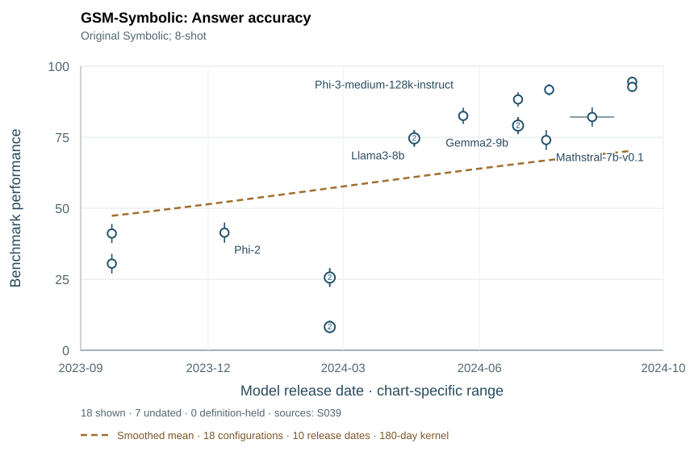

F031 · Component task
GSM-Symbolic

Open data and references ↗Benchmark reference (APA)
Mirzadeh, I., Alizadeh, K., Shahrokhi, H., Tuzel, O., Bengio, S., & Farajtabar, M. (2024). GSM-Symbolic: Understanding the limitations of mathematical reasoning in large language models. arXiv. https://arxiv.org/abs/2410.05229
18 shown / 25 observations · 7 undated · 0 definition-heldOriginal metric · separate task conditions